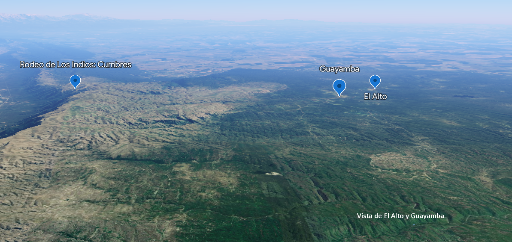

La sierra de El Alto-Ancasti (Catamarca) forma parte del borde oriental de los Andes en el Noroeste argentino.
En el sector norte de la sierra de El Alto-Ancasti confluyen ambientes marcadamente diferentes que han sido clasificados
de acuerdo a pisos altitudinales. Estos pisos son: los pastizales de altura -por sobre los 1.400 msnm-,
el piso del arbustal-pastizal -entre 1.400 y 1.900 msnm- y, entre los 700 y 1.400 msnm, el Bosque Serrano o Yungas,
un bosque húmedo de mayor densidad caracterizado por una gran variedad de especies arbustivas y arbóreas.
En todos ellos hemos relevado una amplia diversidad de registros arqueológicos. Su estudio fue abordado desde distintas dimensiones de análisis (arquitectura, espacios productivos, arte parietal, cronología, manufacturas, etc.) y utilizando las estrategias metodológicas provenientes de la Arqueología del Paisaje, así como estudios de lógica locacional, a partir de la implementación de los Sistemas de Información Geográficos (SIG).
